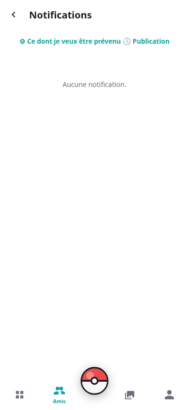
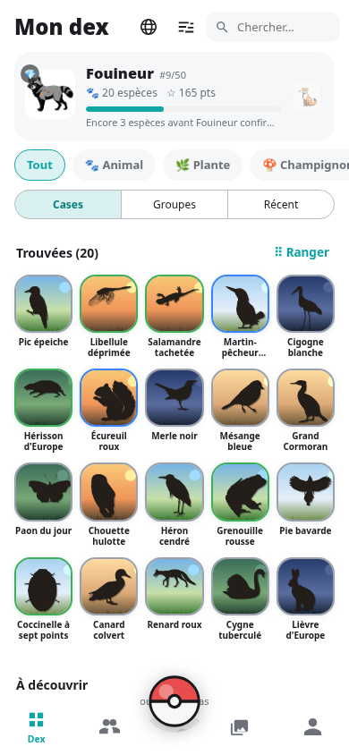
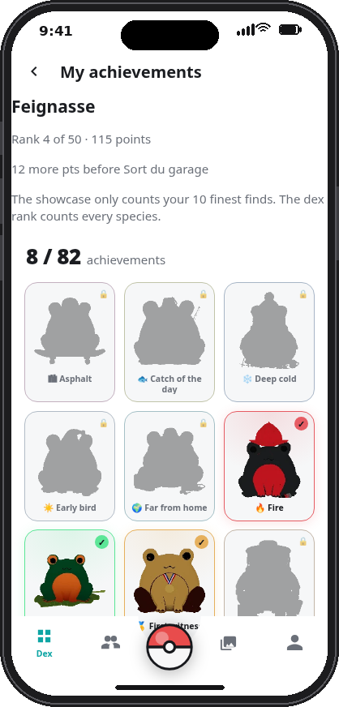

Biodex
BiodexRunning your own server is the one hurdle. If enough of you would rather join a single public server, open to everyone, it will be set up — say so here.
One vote per address, behind a captcha. No account, nothing stored but the count.The dex of
living things.
Photograph whatever you come across. Your own server recognises it among nearly a million species and fills the slot. Your friends do the same — and you compare.


Point. Shoot. Collect.
Everything a collection needs, and nothing that phones home. No email, no account anywhere, no central server: each group of friends hosts its own.
Photograph
From the Android app or the website. Crop, straighten, cut the animal out with your finger before sending. Four kingdoms: animals, plants, fungi, and an aquatic lens for fish.
Recognise
MegaDetector frames the animal, BioCLIP 2 names it, Pl@ntNet takes the plants, FungiTastic the mushrooms. A frequency prior rules out the improbable exotic cousin.
Collect
One slot per accepted species — subspecies and synonyms land together. Five rarities, 5 to 150 points, once per species. Fifty ranks from “Larva” to “Go outside, seriously”.
Achieve
82 achievements, each with its own 3D frog to spin and a crystal to shatter when earned. Conditions stay hidden until you reveal them.
Arrange
Press and hold, move, resize to 2×2, choose the slot shape, hide, place empty slots. Your dex, laid out like a desktop, on every device.
Share
Friends, activity feed, five-level reactions, favourites, captions. Tag friends in a photo: it counts in their dex too. A leaderboard of the circle and a best-catches ranking.
Map
Photos where they were taken, in bubbles that cluster as you zoom out. New things first — what your friends posted and you have not seen yet.
Dress up
Seventeen themes. Falling glyphs, shooting stars, bubbles, a synthwave grid, autumn leaves, cherry petals, snow, northern lights, fireflies, a savanna sunset…
In your language
English and French today; adding a language is a single JSON file shared by the app, the website and the server.
How a photo becomes a slot
Four stages on your server, about fifteen seconds on an ordinary CPU, half a second on a GPU.
Detect
MegaDetector v5a looks for an animal and crops it. A car or a landscape is rejected on the spot.
Compare
BioCLIP 2 compares the crop to 411 626 Latin names for animals, with separate catalogues for plants and fungi.
Weigh
An observation prior from GBIF reweights the raw scores: the roe deer beats the Chilean deer seen 404 times in history.
Decide
Probabilities are summed per slot — cow, zebu and aurochs are one Cow — so the engine stops hesitating between close relatives.
correct on the reference set with the observation prior, against 3/10 without it.
domestic breeds added as aliases, so a cocker and a poodle add up on “Dog” instead of waking the wolf.
bytes leaving your server, except the Wikipedia article fetched once per species and the address you ask it to geocode.
The whole client, in your pocket
Demo accounts, demo photos — every screen of the web client as it looks on a phone. Tap any picture to enlarge it.






From the home screen, no app needed
Safari → Share → Add to Home Screen. Full screen, its own icon, signed in. That is the iPhone version.




Seventeen themes
Thirteen of them paint an animated backdrop behind every screen — the very engine running behind this page. Try one here:


Get Biodex
Two clients, one server. Pick what you need.
Android app
The APK, signed and ready. Allow installs outside the Play Store, then enter your server's address at first launch.
Attached to every release. Download the APKiPhone
Open your server's address in Safari, tap Share, then Add to Home Screen. That is the app.
Needs HTTPS for the camera from the home screen. How toServer and web client
Python 3.12, FastAPI, SQLite. Runs on a CPU. The code as a ZIP, or clone the repository.
Source archive of the main branch, always current. Download the code (ZIP)Data pack
The species database without any player, encoded catalogues, detector weights, silhouettes. About 2.3 GB, fetched and checked by one script.
Attached to thedonnees-v1 release.
Data pack release
git clone https://github.com/Raaatus/BioDex.git && cd BioDex/backend
uv venv .venv && uv pip install -p .venv/bin/python -r requirements-moteur.txt
.venv/bin/python outils/installe_donnees.py https://github.com/Raaatus/BioDex/releases/download/donnees-v1
./run.sh & # the API on :8077
.venv/bin/python serveur_web.py # the web client on :8090Then the full installation guide: systemd units, HTTPS with Caddy, configuration, upgrading without losing anything.
Documentation
Everything in one place: how it works, installing, configuring, upgrading, translating, rebuilding the data, privacy. Generated from the repository README, so it never drifts.